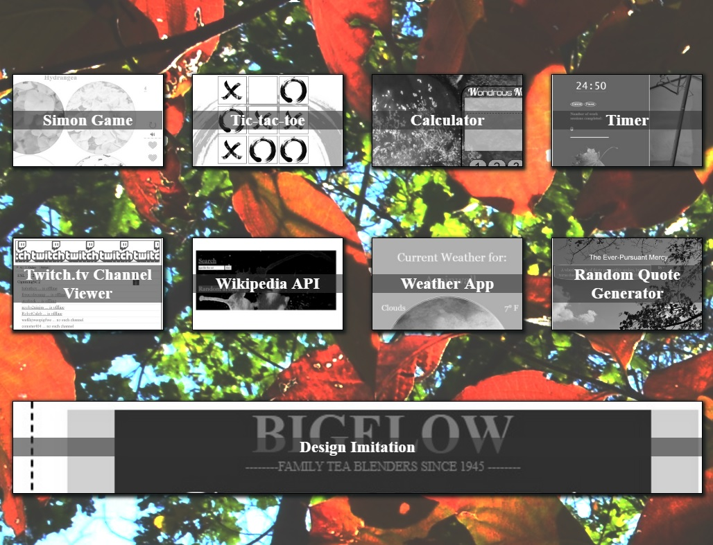
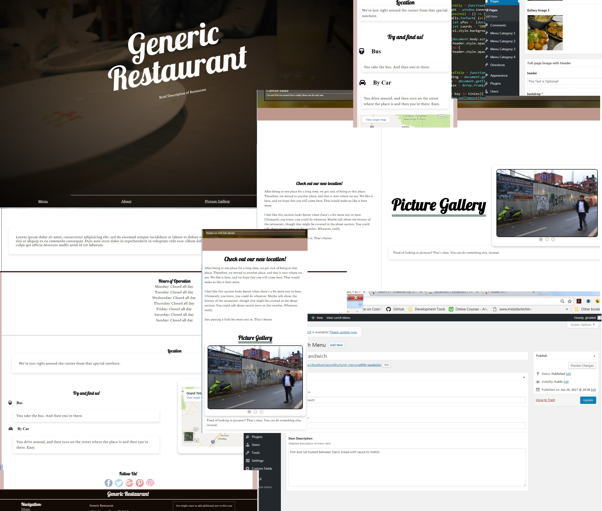
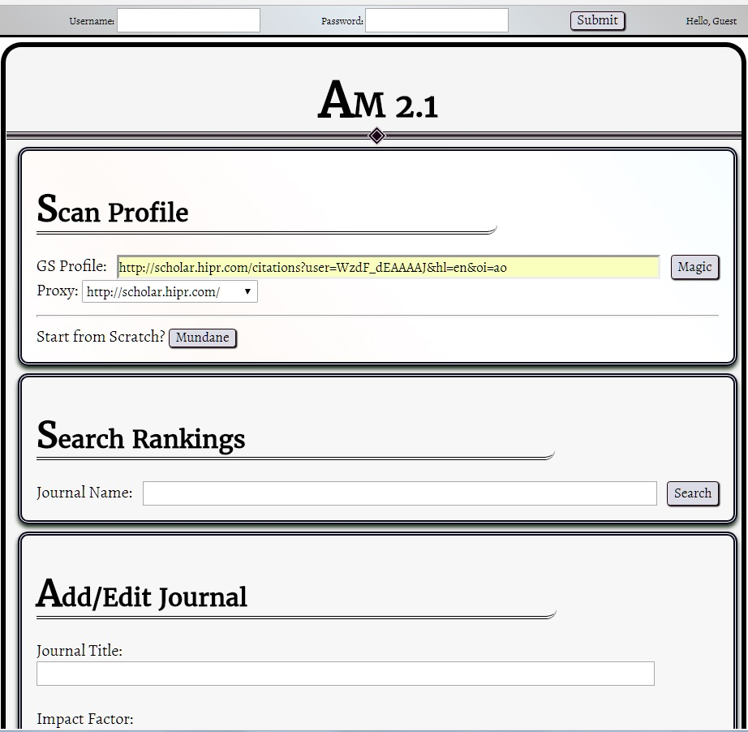
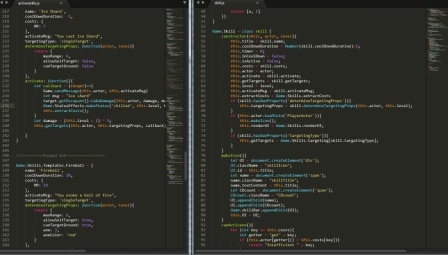
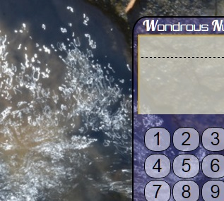

Chris Rune
Full-Stack Web Developer
Photograph of orange and yellowing leaves in early Autumn
Featured Work

My Other Portfolio
https://github.com/gtrabbit/portfolio

WordPress Themes
https://github.com/gtrabbit/wprestauranttheme

Angular Apps
https://github.com/gtrabbit/newautomagic

Rogue-Like
https://github.com/gtrabbit/RLcollab

Calculator
https://github.com/gtrabbit/calculator